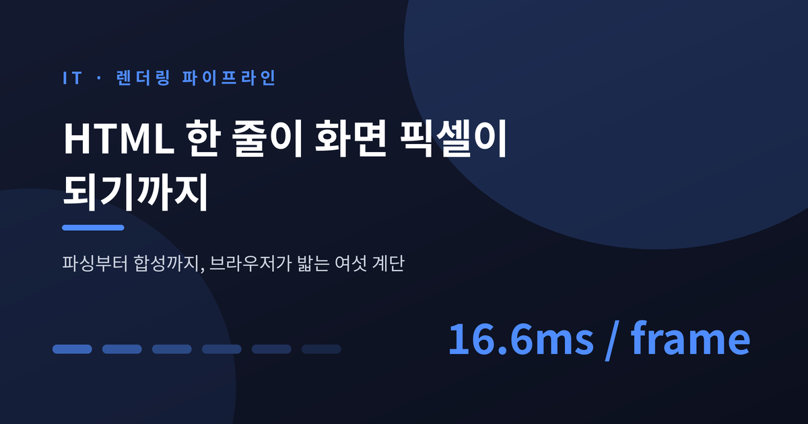
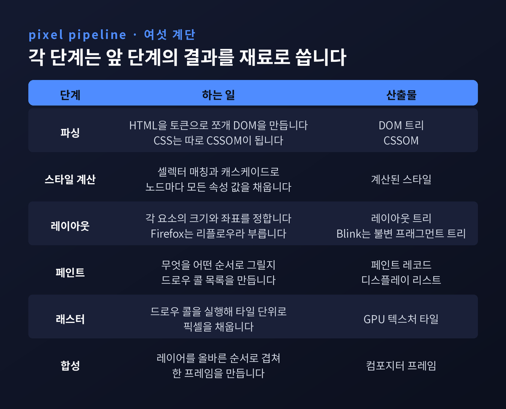
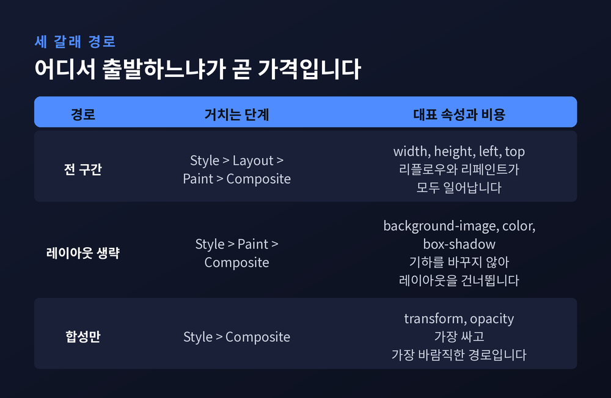
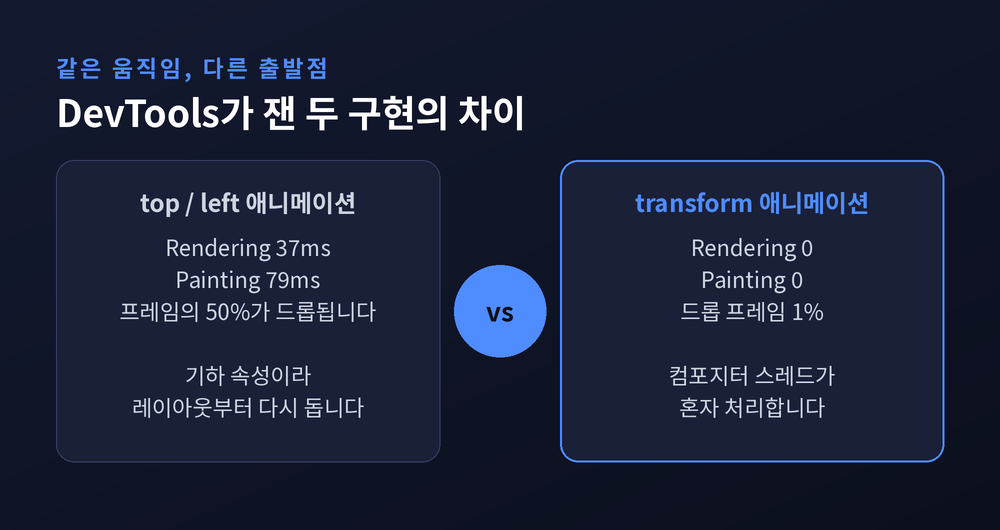
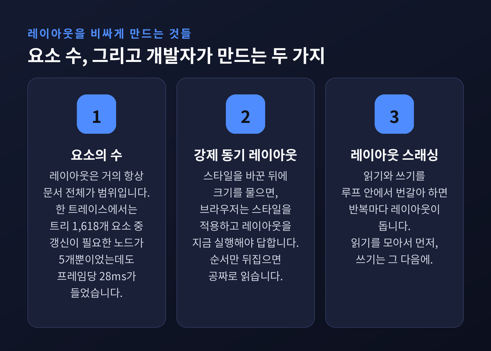
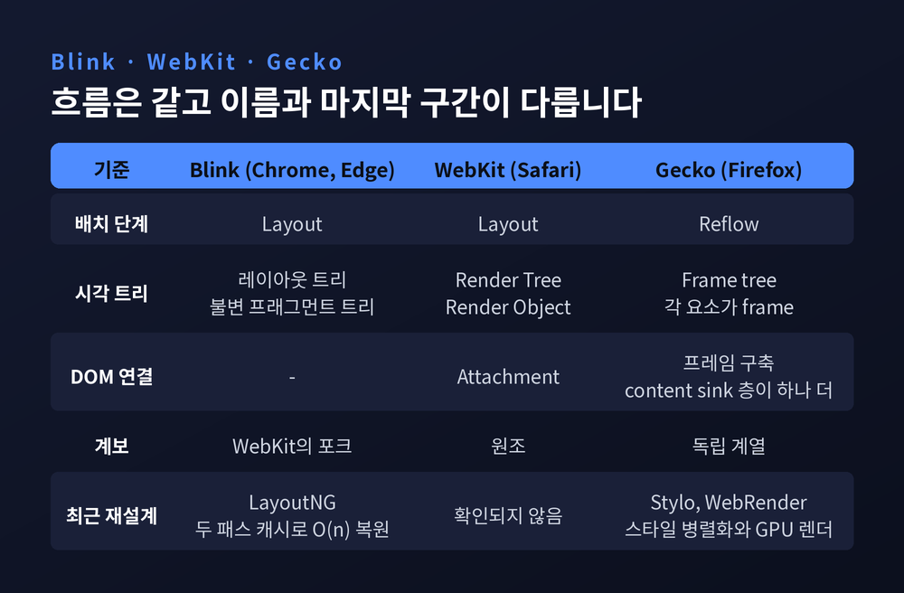
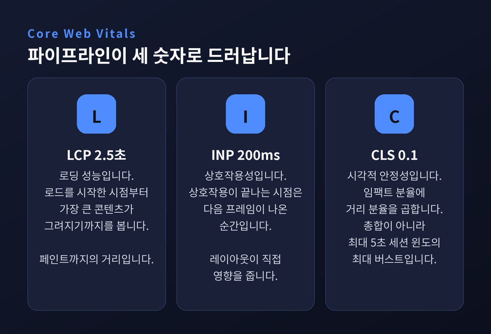

브라우저 렌더링 파이프라인 — HTML 한 줄이 화면 픽셀이 되기까지

이번 글에서는 브라우저 렌더링 파이프라인을 단계별로 정리해 보겠습니다. HTML과 CSS가 어떤 변환을 거쳐 화면의 픽셀이 되는지, 그 과정에서 왜 어떤 CSS 속성은 싸고 어떤 속성은 비싼지를 다룹니다. 마지막에는 이 구조가 Core Web Vitals라는 지표로 어떻게 드러나는지까지 이어보려 합니다.
픽셀 하나에도 여러 번의 변환이 있습니다
브라우저가 하는 일을 한 문장으로 줄이면 이렇습니다. 텍스트를 받아 픽셀을 만든다.
그 사이에 여러 단계가 있습니다. web.dev는 개발자가 실질적으로 통제할 수 있는 구간을 다섯 영역으로 정리합니다. JavaScript, 스타일 계산, 레이아웃, 페인트, 합성입니다.
MDN은 같은 흐름을 자료구조 중심으로 설명합니다. DOM → CSSOM → 렌더 트리 → 레이아웃 → 페인트입니다.
엔진 내부로 들어가면 훨씬 잘게 쪼개집니다. Chromium의 공식 RenderingNG 문서는 이 파이프라인을 열두 단계로 기술합니다. Animate, Style, Layout, Pre-paint, Scroll, Paint, Commit, Layerize, Raster, Activate, Aggregate, Draw입니다.
숫자가 다른 것은 관점의 차이입니다. 개발자가 손댈 수 있는 손잡이를 세면 다섯이고, 엔진이 실제로 밟는 계단을 세면 열둘입니다.
가장 중요한 성질은 따로 있습니다. Chrome 문서의 표현을 그대로 옮기면 이렇습니다.
"각 단계에서 이전 연산의 결과가 새 데이터를 만드는 데 쓰인다."
즉 앞 단계가 흔들리면 뒤 단계가 전부 다시 계산됩니다. 이 한 줄이 이 글 전체의 전제입니다.

파싱 — DOM은 조금씩, CSSOM은 한꺼번에
첫 단계는 파싱입니다. 여기서 이미 두 축의 성격이 갈립니다.
DOM 구축은 점진적입니다. 바이트가 토큰이 되고, 토큰이 노드가 되고, 노드가 트리로 연결됩니다. 브라우저는 HTML을 다 받을 때까지 기다리지 않습니다.
CSSOM은 점진적이지 않습니다. CSS는 렌더 블로킹입니다. 브라우저는 모든 CSS를 받아 처리할 때까지 렌더링을 막습니다.
이유가 명확합니다. 나중 규칙이 앞 규칙을 덮어쓸 수 있기 때문입니다. 나중에 지워질 스타일을 미리 그려 보여줄 수는 없습니다. 그래서 CSSOM은 완전히 파싱되기 전에는 렌더 트리 구축에 쓰이지 못합니다.
HTML 파서는 의외로 너그럽습니다. 닫는 태그를 빠뜨려도 오류가 나지 않습니다. Hi! <b>I'm <i>Chrome</b>!</i>처럼 태그 순서가 어긋난 마크업도 Hi! <b>I'm <i>Chrome</i></b><i>!</i>로 쓴 것처럼 처리됩니다. HTML 명세 자체가 오류를 우아하게 처리하도록 설계됐습니다.
반면 스크립트에는 관대하지 않습니다. <script> 태그를 만나면 파서는 파싱을 멈춥니다. JavaScript를 로드하고 파싱하고 실행할 때까지 기다립니다. document.write() 같은 것으로 문서 구조 전체가 뒤집힐 수 있기 때문입니다.
대신 브라우저는 뒤에서 미리 움직입니다. 프리로드 스캐너가 파서가 만든 토큰을 엿보다가 <img>나 <link>를 발견하면 네트워크 요청을 먼저 보냅니다.
셀렉터 성능에 대해서는 MDN이 흔한 오해를 정정해 둡니다. .foo {}가 .bar .foo {}보다 빠른 것은 맞습니다. 후자는 .foo를 찾은 뒤 조상에 .bar가 있는지 트리를 거슬러 올라가야 하니까요. 다만 개선폭은 마이크로초 단위입니다. MDN의 결론은 담백합니다. 특정성은 가장 낮은 곳에 달린 열매가 아닙니다.
스타일 계산 — 빈칸 없는 서식을 채우는 일
CSS를 한 줄도 쓰지 않아도 모든 DOM 노드는 계산된 스타일을 갖습니다. <h1>이 <h2>보다 크게 나오는 것은 브라우저에 기본 스타일시트가 있기 때문입니다.
스타일 계산의 실체는 두 가지입니다. 셀렉터 매칭과 캐스케이드입니다.
셀렉터 매칭은 이 노드에 걸리는 규칙을 전부 모으는 일입니다. 여러 선언이 같은 속성을 두고 다투면 특정성으로 정렬해 가장 높은 것이 이깁니다.
캐스케이드는 남은 빈칸을 채우는 일입니다. 상속되는 속성이면 조상을 거슬러 올라가 값을 찾고, 없으면 기본값을 씁니다.
Mozilla는 이 과정을 노드마다 서식 한 장을 채우는 일에 비유합니다. 모든 항목에 답이 있어야 하는 서식입니다.
여기서 문제가 하나 생깁니다. CSS에는 속성이 수백 개 있습니다. 노드마다 모든 속성 값을 들고 있으면 메모리가 금세 바닥납니다.
그래서 엔진들은 스타일 구조체 공유를 씁니다. 폰트처럼 함께 다니는 속성들을 별도 객체에 모아두고, 계산된 스타일은 포인터만 갖습니다. 형제 노드는 같은 구조체를 가리킬 수 있고, 상속 속성이 많으니 조상이 자손과 나눠 쓸 수도 있습니다. 메모리와 시간을 함께 아끼는 설계입니다.
레이아웃 — 부르는 이름은 달라도 하는 일은 같습니다
레이아웃은 기하를 계산하는 단계입니다. 메인 스레드가 DOM과 계산된 스타일을 훑으며 x·y 좌표와 바운딩 박스 크기를 담은 트리를 만듭니다.
이 트리는 DOM과 비슷해 보이지만 같지 않습니다. 화면에 보이는 것과 관련된 정보만 담습니다.
display: none인 요소는 레이아웃 트리에 없습니다.visibility: hidden인 요소는 있습니다.p::before{content:"Hi!"}같은 의사 요소는 DOM에 없어도 레이아웃 트리에 들어갑니다.
이름은 엔진마다 다릅니다. Chrome과 Edge, Safari는 Layout이라 부르고 Firefox는 Reflow라 부릅니다. web.dev의 표현을 빌리면 "과정은 사실상 동일"합니다.
트리 이름도 갈립니다. Gecko는 시각적으로 포맷된 요소들의 트리를 Frame tree라 하고 각 요소를 frame이라 부릅니다. WebKit은 Render Tree라 하고 Render Object로 구성된다고 말합니다. DOM 노드와 시각 정보를 연결하는 과정을 WebKit은 Attachment라 부릅니다.
레이아웃은 결코 만만한 계산이 아닙니다. 위에서 아래로 흐르는 가장 단순한 블록 흐름조차 폰트 크기와 줄바꿈 위치를 고려해야 합니다. 그것이 문단의 크기를 정하고, 다시 그 다음 문단의 위치를 정합니다. Chrome에서는 엔지니어 한 팀 전체가 레이아웃만 담당합니다.
뷰포트도 변수입니다. 블록 레벨 요소는 기본이 부모 너비의 100%입니다. viewport 메타 태그가 없으면 전체 화면 브라우저는 보통 960px를 기본 뷰포트 너비로 씁니다. 그래서 기기를 회전하거나 창 크기를 바꿀 때마다 레이아웃이 다시 일어납니다.
작은 변화마다 전체를 다시 계산하지는 않습니다. 브라우저는 더티 비트 시스템으로 변경된 부분만 표시해 두고, 점진적 레이아웃을 비동기로 처리합니다. Firefox는 리플로우 명령을 큐에 넣고 스케줄러가 묶어서 실행합니다.
다만 예외가 있습니다. offsetHeight 같은 값을 스크립트가 물으면, 점진적 레이아웃이 동기적으로 트리거됩니다. 이 예외가 뒤에서 큰 문제가 됩니다.
페인트와 래스터 — 그리는 순서를 정하고, 픽셀을 채웁니다
크기와 위치를 알아도 아직 부족합니다. 어떤 순서로 그릴지 정해야 합니다. z-index가 걸린 요소가 있는데 HTML에 적힌 순서대로 칠하면 결과가 틀립니다.
페인트 단계에서 메인 스레드는 레이아웃 트리를 훑으며 페인트 레코드를 만듭니다. "배경 먼저, 그다음 텍스트, 그다음 사각형" 같은 메모입니다.
여기서 용어를 하나 구분해 둘 필요가 있습니다. web.dev는 페인팅이 사실 두 가지 일이라고 말합니다. 드로우 콜 목록을 만드는 것과, 실제로 픽셀을 채우는 것입니다. 뒤쪽이 래스터화입니다.
로드할 때는 화면 전체가 페인트됩니다. 그 이후에는 영향받은 영역만 다시 칠합니다. 브라우저는 필요한 최소 영역만 리페인트하도록 최적화돼 있습니다.
MDN은 여기에 균형 잡힌 단서를 답니다. 페인팅은 매우 빠른 과정이므로 성능 개선의 최우선 대상은 아닐 가능성이 높다는 것입니다. 페인트를 0.001ms 줄이는 스타일 제거는 투자 대비 효과가 크지 않습니다. 먼저 측정하라는 조언이 앞섭니다.
물론 예외는 있습니다. 블러가 들어가는 그림자 같은 것은 단색 사각형을 그리는 것보다 훨씬 오래 걸립니다. 이건 CSS만 봐서는 잘 드러나지 않습니다.
합성 — 메인 스레드를 건너뛰는 길
예전 Chrome은 뷰포트 안쪽만 래스터하고, 스크롤하면 그 프레임을 옮긴 뒤 빈 자리를 채웠습니다. 지금은 다릅니다. 페이지를 여러 레이어로 나눠 따로 래스터하고, 컴포지터 스레드라는 별도 스레드에서 합칩니다.
과정은 이렇습니다.
메인 스레드가 레이아웃 트리를 훑어 레이어 트리를 만듭니다. 레이어 트리와 페인트 순서가 정해지면 그 정보를 컴포지터 스레드에 커밋합니다.
컴포지터 스레드는 레이어를 타일로 쪼개 래스터 스레드들에 보냅니다. 레이어가 페이지 전체 길이만큼 클 수도 있기 때문입니다. 래스터된 타일은 GPU 메모리에 저장됩니다.
컴포지터 스레드는 우선순위도 조정합니다. 뷰포트 안쪽 타일을 먼저 래스터하게 만들 수 있습니다. 줌인에 대비해 레이어마다 여러 해상도의 타일링을 갖기도 합니다.
타일이 준비되면 드로우 쿼드를 모아 컴포지터 프레임을 만듭니다. 드로우 쿼드는 타일이 메모리 어디에 있고 페이지 어디에 그려야 하는지를 담은 정보입니다. 이 프레임이 GPU로 가서 화면이 됩니다.
핵심은 마지막 한 문장입니다.
합성은 메인 스레드를 개입시키지 않고 이루어집니다. 컴포지터 스레드는 스타일 계산도, JavaScript 실행도 기다리지 않습니다.
Chromium이 스크롤을 가능한 한 컴포지터 스레드에서만 처리하도록 최적화한 이유가 여기 있습니다. 페이지가 응답하지 않는 상태에서도 스크롤이 되고 이미 그려진 부분이 보이는 경험, 한 번쯤 겪어보셨을 겁니다.
세 가지 경로, 세 가지 가격
시각 변화를 만들 때 파이프라인이 흘러가는 방식은 보통 세 갈래입니다.
첫째, 전 구간을 다 도는 경로. width, height, left, top 같은 기하 속성을 바꾸면 브라우저는 다른 모든 요소를 확인하고 페이지를 리플로우해야 합니다. 영향받은 영역은 리페인트되고, 최종 요소들이 다시 합성됩니다.
둘째, 레이아웃을 건너뛰는 경로. background-image, color, box-shadow 같은 페인트 전용 속성은 기하를 바꾸지 않습니다. 레이아웃 단계가 생략되고, 그만큼 다음 프레임까지의 지연이 줄어듭니다.
셋째, 합성으로 직행하는 경로. 레이아웃도 페인트도 필요 없는 속성이라면 브라우저는 곧장 합성 단계로 갑니다. web.dev는 이 경로를 "가장 싸고 가장 바람직한" 길이라고 부릅니다.

여기에 시간 제약이 붙습니다.
오늘날 대부분의 기기는 초당 60번 화면을 갱신합니다. 산술적으로 프레임 하나에 16.66밀리초가 주어집니다. Mozilla도 같은 수를 씁니다. 16.67밀리초를 프레임 예산이라 부릅니다.
다만 이 시간을 전부 쓸 수 있는 것은 아닙니다. 브라우저 자체 오버헤드가 있기 때문에, web.dev는 개발자의 작업이 10밀리초 안에 끝나야 한다고 못 박습니다.
이 예산을 넘기면 프레임이 드롭됩니다. 디스플레이가 새 프레임을 가져가려 할 때 아직 준비가 안 됐으면 이전 프레임을 한 번 더 보여줍니다. 플립북에서 한 장을 찢어낸 것과 같습니다. 이것이 잰크(jank)입니다.
transform과 opacity만 특별대우를 받는 이유
앞의 세 번째 경로로 갈 수 있는 속성은 생각보다 적습니다. web.dev의 표현은 단정적입니다.
"컴포지터 혼자 처리할 수 있는 속성은 딱 두 개, transform과 opacity뿐이다."
이동은 transform: translate(), 회전은 rotate(), 크기 변경은 scale(), 표시와 숨김은 opacity로 처리합니다.
말로만 들으면 미묘한 차이 같습니다. 실측 숫자를 보면 그렇지 않습니다.
web.dev가 같은 움직임을 두 방식으로 구현해 DevTools로 잰 결과가 있습니다.
top과 left를 애니메이션한 쪽은 Summary 탭에 Rendering 37ms, Painting 79ms가 찍힙니다. FPS 미터에서는 프레임의 50%가 드롭됩니다.
transform: translate()로 바꾼 쪽은 Rendering과 Painting이 모두 0입니다. 드롭 프레임은 1%입니다.
같은 화면, 같은 궤적입니다. 파이프라인의 어느 지점에서 출발하느냐만 다릅니다.

그렇다면 모든 요소를 레이어로 올리면 되지 않을까 싶습니다. 그렇지 않습니다.
will-change 속성으로 레이어 생성을 강제할 수 있지만, web.dev는 최적화 초기 단계에 쓰지 말라고 권합니다. 그래픽 문제가 실제로 눈에 띄고 레이어 승격이 도움이 될 것 같을 때만 쓰라는 것입니다.
Chrome 문서의 경고도 같은 방향입니다. 지나치게 많은 레이어를 합성하는 것이, 매 프레임 페이지의 작은 부분을 래스터하는 것보다 느릴 수 있습니다. 만드는 모든 레이어는 메모리와 관리를 필요로 하고, 그것은 공짜가 아닙니다.
Mozilla는 반대 방향의 실패도 지적합니다. 나뉘어야 할 것이 한 레이어로 묶이면, 그 레이어는 계속 다시 칠해지고 컴포지터로 전송돼 아무것도 바뀌지 않은 채 합성됩니다. 그리는 양이 두 배가 되고, 아무 이득 없이 각 픽셀을 두 번 건드리게 됩니다.
레이어는 만능이 아닙니다. 배경색을 애니메이션하면 어차피 레이어 전체를 다시 칠해야 합니다.
레이아웃을 비싸게 만드는 두 가지 습관
레이아웃 비용을 키우는 요인은 크게 둘입니다. 레이아웃이 필요한 요소의 수, 그리고 그 레이아웃의 복잡도입니다.
web.dev의 진단은 냉정합니다. 레이아웃은 거의 항상 문서 전체를 범위로 합니다. 요소가 많으면 그 모든 것의 위치와 치수를 알아내는 데 오래 걸립니다.
실제 트레이스 사례가 인상적입니다. 프레임당 레이아웃에 28밀리초 이상이 소비되고 있었습니다. 애니메이션에서 프레임 하나에 16밀리초밖에 없는 상황이었습니다. 같은 트레이스에서 트리 크기는 1,618개 요소, 레이아웃이 필요했던 노드는 5개였습니다.
여기에 개발자가 스스로 만드는 문제가 둘 더 붙습니다.
첫째, 강제 동기 레이아웃입니다. 프레임을 화면에 보내는 순서는 JavaScript → 스타일 계산 → 레이아웃입니다. 그런데 JS가 실행되는 시점에는 이전 프레임의 레이아웃 값이 이미 알려져 있습니다. 그냥 읽으면 공짜입니다.
문제는 순서를 뒤집을 때 생깁니다.
function logBoxHeight () {
box.classList.add('super-big');
console.log(box.offsetHeight); // 스타일 적용 → 레이아웃을 지금 돌려야 답할 수 있습니다
}높이를 답하려면 브라우저는 먼저 스타일 변경을 적용하고 레이아웃을 실행해야 합니다. 불필요하고 잠재적으로 비싼 작업입니다.
고치는 방법은 순서를 되돌리는 것뿐입니다.
function logBoxHeight () {
console.log(box.offsetHeight); // 읽기 먼저
box.classList.add('super-big'); // 쓰기 나중
}둘째, 레이아웃 스래싱입니다. 강제 동기 레이아웃을 짧은 시간에 여러 번 하면 상황이 훨씬 나빠집니다.
for (let i = 0; i < paragraphs.length; i++) {
paragraphs[i].style.width = `${box.offsetWidth}px`;
}루프의 매 반복이 값을 읽고 곧바로 씁니다. 다음 반복에서 브라우저는 직전에 스타일이 바뀌었다는 사실을 반영해야 하므로 스타일을 적용하고 레이아웃을 돌립니다. 매 반복마다입니다.
너비를 루프 바깥에서 한 번만 읽으면 끝나는 문제입니다. 원칙 한 줄로 줄이면 이렇습니다. 읽기를 모아서 먼저, 쓰기는 그 다음에.

Chrome DevTools에는 Forced Reflow 인사이트가 있어 이런 사례를 찾아줍니다. 필드에서는 Long Animation Frame API의 forcedStyleAndLayoutDuration 속성으로 확인할 수 있습니다.
엔진들이 갈라선 지점
브라우저 엔진은 크게 셋입니다. Chrome과 Edge의 Blink, Safari의 WebKit, Firefox의 Gecko입니다. Blink는 WebKit의 포크입니다.
큰 흐름은 같습니다. 고전 자료의 결론이 그렇습니다. WebKit과 Gecko는 용어가 조금 다르지만 흐름은 기본적으로 같습니다.
다만 갈라지는 지점이 있습니다. Mozilla의 진단이 정확합니다. 페인팅과 합성은 브라우저 렌더링 엔진들이 서로 가장 많이 다른 지점입니다.

Blink의 LayoutNG. 예전 Blink의 레이아웃 트리는 가변 트리였습니다. 객체 하나가 입력 정보와 출력 정보를 함께 들고 렌더 사이에 계속 살아남았습니다. 지금은 다릅니다. 출력으로 완전히 새로운 불변 프래그먼트 트리를 만듭니다.
이 변화가 없앤 문제 중 하나가 인상적입니다. 창 크기를 바꾸면 버그가 마술처럼 사라지는 현상, 이른바 언더-인밸리데이션입니다. 그리고 CSS 속성을 두 값 사이에서 왔다 갔다 시키기만 했는데 사각형이 무한히 커지던 버그도 있었습니다. Chrome 92 이하에서 재현되고 93에서 고쳐졌습니다.
성능 쪽 이야기도 구체적입니다. 플렉스와 그리드는 자식 크기를 재는 패스와 늘리는 패스, 두 번을 돕니다. 캐시하지 않으면 트리 깊이 n에 대해 2ⁿ이 됩니다. LayoutNG는 두 패스 결과를 모두 캐시해 복잡도를 O(n)으로 되돌렸습니다. 문서가 남긴 진단 기준이 실무적으로 유용합니다. 요소 하나가 속성 하나를 바꾸는 작은 변경이 50~100ms 레이아웃을 유발한다면, 그것은 지수적 레이아웃 버그일 가능성이 높습니다.
Gecko의 Stylo와 WebRender. Firefox는 Servo에서 두 조각을 가져왔습니다.
Stylo는 스타일 계산을 모든 CPU 코어에 분산합니다. 약 16만 줄의 C++를 8만 5천 줄의 Rust로 대체했습니다. DOM 트리가 고르지 않아 한 코어에 일이 몰리는 문제는 워크 스틸링으로 풉니다. 큐가 빈 코어가 다른 큐를 뒤져 일을 가져갑니다. 결과적으로 코어가 4개면 4배에 가깝게 빨라집니다.
WebRender는 더 과감합니다. 페인트와 합성의 구분 자체를 없앴습니다. 레이아웃이 넘겨주는 것도 프레임 트리가 아니라 디스플레이 리스트입니다.
발상은 게임 엔진에서 왔습니다. 현대의 비디오 게임은 매 프레임 모든 픽셀을 다시 칠하면서도 브라우저보다 안정적으로 60fps를 유지합니다. CPU로는 무모한 일이지만 GPU는 이를 위해 만들어졌습니다. CPU는 보통 2~8코어, GPU는 최소 수백 코어이고 흔히 1,000코어를 넘습니다.
물론 전부 GPU로 옮긴 것은 아닙니다. 글리프, 그러니까 문자 모양은 여전히 CPU에서 그립니다. GPU에서 그리면 같은 컴퓨터의 다른 애플리케이션이 그린 글자와 픽셀 단위로 맞추기 어려워 사용자가 어색함을 느끼기 때문입니다.
Core Web Vitals — 파이프라인이 지표로 드러나는 자리
지금까지의 이야기는 추상적으로 들릴 수 있습니다. 그런데 이 파이프라인은 세 개의 숫자로 아주 구체적으로 드러납니다.
- LCP — 로딩. 페이지가 로드를 시작한 시점부터 2.5초 이내.
- INP — 상호작용성. 200밀리초 이하.
- CLS — 시각적 안정성. 0.1 이하.
기준은 75번째 백분위수이고, 모바일과 데스크톱을 분리해 봅니다.

INP는 레이아웃과 직결됩니다. web.dev의 문장이 명료합니다. 레이아웃은 인터랙션 지연에 직접 영향을 줍니다. 상호작용이 끝나는 시점은 브라우저가 결과를 보여주는 다음 프레임을 제시한 순간이기 때문입니다. INP를 낮추려면 가능한 한 레이아웃을 피하고, 피할 수 없으면 그 작업량을 줄여야 합니다.
CLS는 레이아웃 단계가 사용자 경험으로 새어 나온 것입니다. 보이는 요소가 한 프레임과 다음 프레임 사이에 시작 위치를 바꾸면 레이아웃 시프트로 잡힙니다.
계산식은 곱입니다.
레이아웃 시프트 점수 = 임팩트 분율 × 거리 분율임팩트 분율은 불안정 요소들의 이전·현재 영역을 합친 것이 뷰포트에서 차지하는 비율입니다. 거리 분율은 요소가 움직인 최대 거리를 뷰포트의 더 긴 쪽 치수로 나눈 값입니다.
예를 보면 감이 잡힙니다. 뷰포트 절반을 차지하던 요소가 뷰포트 높이의 25%만큼 내려가면, 임팩트 분율 0.75에 거리 분율 0.25를 곱해 0.1875가 됩니다.
거리 분율은 원래 없던 개념입니다. 임팩트 분율만으로 계산하면 큰 요소가 조금 움직인 경우를 과도하게 벌하게 되어 나중에 도입됐습니다.
한 가지 오해를 짚어두겠습니다. CLS는 페이지 생애 전체의 합이 아닙니다. 가장 큰 버스트입니다. 개별 시프트 사이 간격이 1초 미만이고 전체 길이가 최대 5초인 구간을 세션 윈도라 하는데, 그중 점수 합이 가장 큰 윈도가 CLS입니다.
그리고 모든 시프트가 나쁜 것도 아닙니다. 사용자 입력 후 500밀리초 이내에 일어난 시프트는 hadRecentInput 플래그가 붙어 계산에서 제외될 수 있습니다. 다만 탭, 클릭, 키 입력 같은 불연속 입력에만 해당합니다. 스크롤이나 드래그는 "최근 입력"으로 치지 않습니다.
CLS를 줄이는 web.dev의 권고는 앞서 본 결론과 정확히 겹칩니다.
height와width를 바꾸는 대신transform: scale()을 쓰십시오.top,right,bottom,left를 바꾸는 대신transform: translate()를 쓰십시오.
CSS transform 속성은 레이아웃 시프트를 유발하지 않고 요소를 움직일 수 있게 해 줍니다. 합성 단계가 싸다는 이야기와 시각적 안정성 지표가 결국 같은 자리에서 만납니다.
마지막으로 한계도 적어두는 편이 정직하겠습니다. 랩 도구는 합성 환경에서 페이지를 로드하므로 로드 중에 일어난 시프트만 잡습니다. 실제 사용자가 겪는 값보다 작게 나올 수 있습니다. 테스트 이미지는 이미 개발자 브라우저 캐시에 있지만, 사용자에게는 그렇지 않습니다.
정리하면 이렇습니다.
브라우저는 텍스트를 픽셀로 바꾸기 위해 파싱, 스타일 계산, 레이아웃, 페인트, 래스터, 합성이라는 계단을 밟습니다. 각 단계는 앞 단계의 결과를 재료로 씁니다. 그래서 어느 지점을 건드리느냐가 곧 비용이 됩니다.
width를 건드리면 여섯 계단을 다 오릅니다. color를 건드리면 레이아웃을 건너뜁니다. transform을 건드리면 컴포지터 스레드 혼자 처리하고 끝납니다.
"성능 최적화란 결국 일을 피하는 기술입니다."
물론 이 지식이 모든 문제를 풀어주지는 않습니다. 측정이 먼저라는 조언이 거의 모든 공식 문서에 붙어 있는 이유가 있을 겁니다.
다만 프로파일러의 보라색 막대가 왜 거기 있는지 알고 보는 것과 모르고 보는 것은 다릅니다. 애니메이션이 유독 끊길 때 어디부터 의심해야 하느냐고 물으신다면, 저는 파이프라인의 어느 계단에서 출발했는지부터 확인해 보시라고 답하겠습니다.